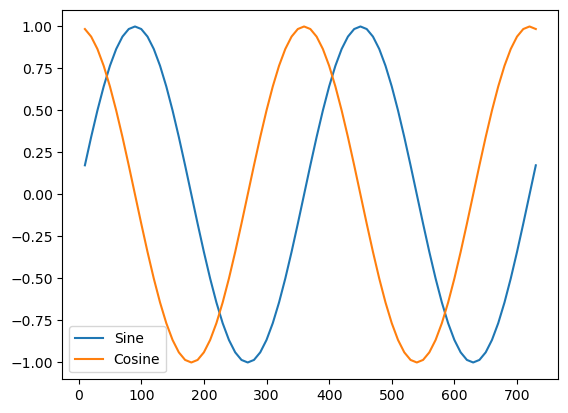

Extract results held in Molpro variables
[1]:
from pymolpro import Project
[2]:
p=Project("molpro_variables")
p.write_input("""
do i=1,73
x(i)=i*10, cosine(i)=cos(x(i)), sine(i)=sin(x(i))
enddo
put,xml
""")
p.run(wait=True)
assert p.status=='completed' and not p.errors()
[3]:
values={}
for name in ['x','sine','cosine']:
# values[name]=[float(v.text) for v in p.xpath('//variable[@name="'+name.upper()+'"]/value')]
values[name]=p.variable(name)
[4]:
import matplotlib.pyplot as plt
plt.plot(values['x'],values['sine'],values['x'],values['cosine'])
plt.legend(['Sine','Cosine']);
